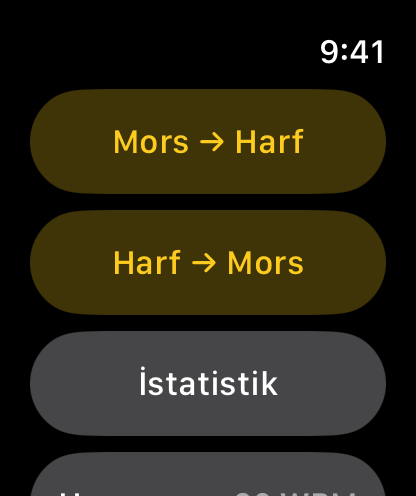
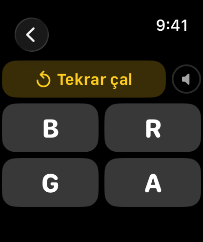
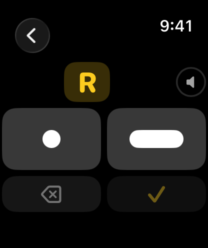
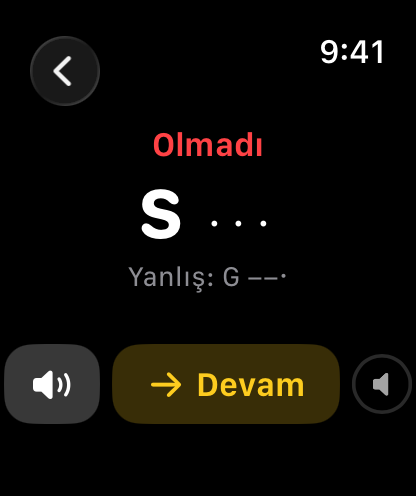
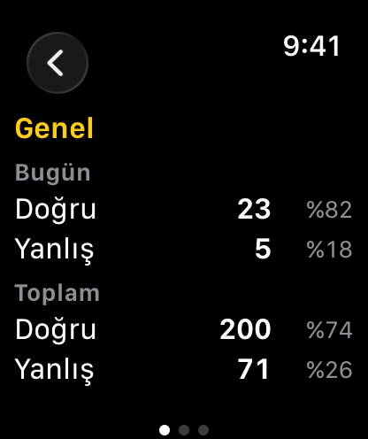

Mors Hocası Kolunda
Apple Watch’unuzda Mors alfabesi çalışın. Duyduğunuz kodun hangi harf olduğunu bulun veya ekrandaki harfi nokta ve çizgilerle yazın. Her sorudan sonra doğru cevabı görebilir, kodu tekrar dinleyebilirsiniz. Uygulama A–Z arasındaki 26 harfi içerir. Çalışma hızını 8–25 WPM arasında ayarlayabilirsiniz. iPhone gerekmez.
watchOS 8 veya sonrası gerekir.
İndir


Destek
Sorularınız veya karşılaştığınız sorunlar için bize yazabilirsiniz.
Yazmadan önce
Bize yazmadan önce aşağıdaki adımları deneyebilirsiniz:
- Uygulama yanıt vermiyor mu? Digital Crown'a iki kez basıp açık uygulamaları görün, ardından Mors Hocası kartını yukarı kaydırıp kapatın. Uygulama listenizden yeniden açın.
- Ses çıkmıyor mu? Alıştırma sırasında Digital Crown’u çevirerek sesi açın. Sesi saatin hoparlöründen veya bağlı Bluetooth kulaklıktan duyabilirsiniz.
- Takip edemeyecek kadar hızlı mı? Menüden Hız bölümünü açıp daha düşük bir hız seçin. Başlangıç için 8 WPM’yi deneyebilirsiniz.
- Yazdığınız Mors kodu yanlış mı sayılıyor? Nokta ve çizgilerin sayısını ve sırasını kontrol edin. Tamam'a basmadan önce Sil ile son işareti kaldırabilirsiniz.
Sıkça Sorulan Sorular
- iPhone olmadan çalışır mı?
Evet. Uygulama doğrudan Apple Watch’ta çalışır; iPhone gerekmez. - Hangi karakterleri kapsıyor?
ITU-R M.1677-1’de tanımlanan uluslararası Mors alfabesinin A–Z arasındaki 26 harfini içerir. Bu sürümde rakamlar ve noktalama işaretleri bulunmaz. - Hız ayarı ne anlama geliyor?
Bu ayar, Mors kodunun ne kadar hızlı çalacağını belirler. Hız, standart PARIS kelimesi esas alınarak dakikadaki kelime sayısıyla (WPM) ifade edilir. 8 WPM'de bir nokta 150 ms, 25 WPM'de 48 ms sürer. Hız ekranında bir satıra dokunduğunuzda o hızda bir örnek çalar. - Süre sınırı var mı?
Hayır. Cevap vermeden önce kodu istediğiniz kadar dinleyebilirsiniz. Cevabınızdan sonra doğru kod ve sizin cevabınız gösterilir; isterseniz tekrar dinleyebilirsiniz. - Harf → Mors'ta her dokunuş ses çıkarıyor mu?
Evet. Dokunduğunuzda nokta veya çizginin sesini duyarsınız. - Hangi cevaplar istatistiklere dahil edilir?
Yalnızca cevapladığınız sorular sayılır. Tekrar dinlemeler ve cevap vermeden çıktığınız sorular istatistiklere eklenmez. - Ayarlarım kaydediliyor mu?
Evet. Seçtiğiniz hız kaydedilir; uygulamayı yeniden açtığınızda tekrar ayarlamanız gerekmez. - Herhangi bir veri topluyor mu?
Hayır. Hız ayarınız ve alıştırma sonuçlarınız yalnızca saatinizde saklanır; başka bir yere gönderilmez.
Kullanım






Mors → Harf
- Mors → Harf seçeneğine dokunun. Bir harfin Mors kodunu duyacaksınız.
- Kodu yeniden dinlemek için Tekrar çal düğmesine dokunun.
- Duyduğunuz koda karşılık gelen harfi seçin.
Harf → Mors
- Harf → Mors seçeneğine dokunun. Ekranda bir harf göreceksiniz.
- Harfin kodunu Nokta (●) ve Çizgi (▬) tuşlarıyla yazın. Dokunduğunuzda nokta veya çizginin sesini duyarsınız.
- Sil (⌫) son işareti kaldırır.
- Cevaplamak için Tamam (✓) tuşuna dokunun.
Sonuç
Her cevaptan sonra Doğru ya da Olmadı yazısı, harfin doğru kodu ve sizin cevabınız görünür. Yeniden dinlemek için hoparlör düğmesine, yeni bir harf için Devam'a dokunun.
Hız
Hızı 8–25 WPM arasında ayarlayabilirsiniz. Listedeki bir hıza dokunarak örneğini dinleyin. Başlangıçta düşük bir hız seçip alıştıkça artırabilirsiniz. Seçtiğiniz hız hem dinleme hem yazma alıştırmalarında kullanılır ve uygulamayı kapatsanız da değişmez.
İstatistik
Bugün ve Toplam bölümlerinde doğru ve yanlış cevap sayılarınızı ve yüzdelerini görebilirsiniz. Yana kaydırarak üç sayfa arasında geçebilirsiniz: Genel, Mors → Harf ve Harf → Mors.
Mors Alfabesi
| Harf | Kod | Harf | Kod |
|---|---|---|---|
| A | · ▬ | N | ▬ · |
| B | ▬ · · · | O | ▬ ▬ ▬ |
| C | ▬ · ▬ · | P | · ▬ ▬ · |
| D | ▬ · · | Q | ▬ ▬ · ▬ |
| E | · | R | · ▬ · |
| F | · · ▬ · | S | · · · |
| G | ▬ ▬ · | T | ▬ |
| H | · · · · | U | · · ▬ |
| I | · · | V | · · · ▬ |
| J | · ▬ ▬ ▬ | W | · ▬ ▬ |
| K | ▬ · ▬ | X | ▬ · · ▬ |
| L | · ▬ · · | Y | ▬ · ▬ ▬ |
| M | ▬ ▬ | Z | ▬ ▬ · · |
Yasal
Gizlilik Politikası
Son Güncelleme: Eylül 2026
Giriş
Mors Hocası Kolunda'ya hoş geldiniz. Gizliliğinize saygı göstermeyi ve onu korumayı taahhüt ediyoruz. Bu Gizlilik Politikası, topladığımız, bu durumda toplamadığımız bilgi türlerini ve gizliliğinizi sağlamak için kullandığımız yöntemleri açıklar.
Toplamadığımız Bilgiler
Mors Hocası Kolunda, sıfır veri toplama ilkesiyle tasarlanmıştır. Kullanıcılarımızdan hiçbir kişisel veriyi toplamıyor, saklamıyor, kullanmıyor, paylaşmıyor veya aktarmıyoruz. Uygulama tümüyle Apple Watch'unuzda çalışır; hiçbir sunucuda veri işlenmez veya saklanmaz.
Uygulama saatinizde yalnızca iki şey tutar: seçtiğiniz çalışma hızı ve çalışma sayılarınız (bugün ve tüm zamanlar için doğru ve yanlış cevaplar). Bunlar yalnızca saatte saklanır, hiçbir yere gönderilmez ve uygulamayı sildiğinizde silinir.
Uygulamanın internet erişimi, kullanıcı hesabı, analiz aracı, reklam veya üçüncü taraf kodu yoktur.
Üçüncü Taraf Hizmetleri
Mors Hocası Kolunda; analiz araçları, reklam ağları veya sosyal medya platformları gibi hiçbir üçüncü taraf hizmetiyle bütünleşmez. Hiçbir üçüncü tarafla veri paylaşılmaz.
Çocukların Gizliliği
Hiçbir veri toplamadığımız için, Çocukların Çevrimiçi Gizliliğini Koruma Yasası (COPPA) gibi çocukların gizliliğine ilişkin tüm ilgili düzenlemelere uyuyoruz.
Bu Politikadaki Değişiklikler
Gizlilik Politikamızı zaman zaman güncelleyebiliriz. Değişiklikler için bu sayfayı düzenli olarak gözden geçirmenizi öneririz. Değişiklikler, bu sayfada yayımlandığı anda geçerli olur.
Bize Ulaşın
Gizlilik Politikamızla ilgili soru veya önerileriniz varsa bize çekinmeden yazın: support [at] hoshinosoftware [dot] com